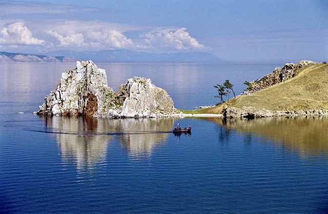
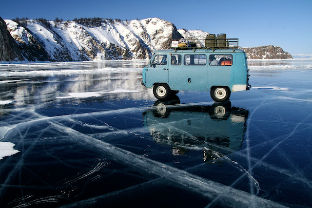
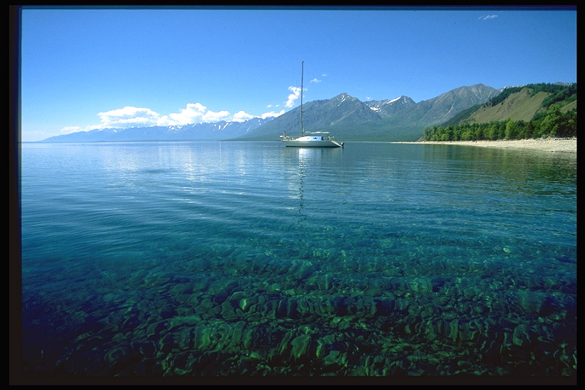

Мой первый веб-сайт.
Немного о себе.
Меня зовут Алексей Головинов. Из-за пандемии Ковид-19 и последовавшей за ней СВО, я остался без работы и решил поменять профессию - стать веб-разработчиком. Я всегда интересовался современными технологиями, интересными и не всегда полезными гаджетами и давно хотел научиться разрабатывать сайты и приложения. Давным-давно, в далёком 1995 году, на последнем курсе института, я написал дипломную работу о методике использования компьютерной программы в преподавании французского языка.
Я живу в Иркутске. Неподалёку от знаменитого озера Байкал.
  
Вот какая красота!
Чему я хочу научиться
На данном конкретном курсе я надеюсь получить базовые знания по HTML, CSS, JavaScript, PHP и сопутствующим технологиям, необходимые для более углублённого изучения веб-разработки.